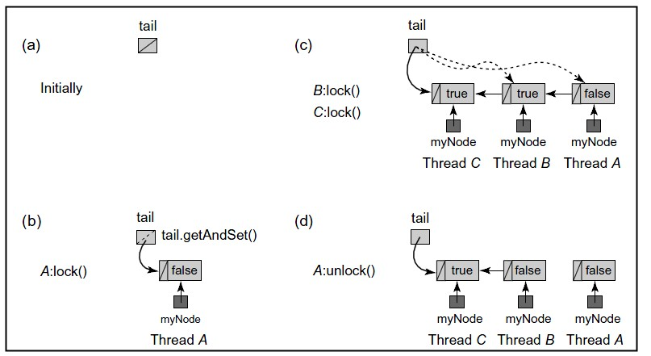

MCS
与CLH类似，MCS也是由QNode对象构成的链表，不同的是，MCS队列是一个显示链表，是通过next指针串起来的。
原理
节点：队列节点对象QNode含有一个locked字段，该字段为true则表示该线程需要获取锁，且不释放锁，为false则表示该线程释放锁；还有另一个next字段，该字段指向该节点的下一个节点对象。
获取锁：线程会把自己的QNode放置到队列尾部，如果队列的队尾节点不为null，则将队尾节点的next字段指向当前节点，然后在当前节点的locked字段上自旋等待上一个节点释放锁时修改当前节点的locked值。
释放锁：先检查当前节点的next是否为null，如果未为null，则可能是当前节点为队尾节点，或者是还有其他线程在竞争锁。不管是哪种情况都可以使用compareAndSet(q,null)来判断，如果成功则为队尾节点，这时队尾节点指向null，程序之间返回；如果失败，说明有其他线程在试图获得锁，于是自旋等待它结束。以上任何情况，如果有后继节点则将后继节点的locked属性设为false在返回。
图解

如上图所示，MCS队列锁的具体实现如下：
- 如图（a）所示，队列初始化时没有结点，tail=null；
- 如图（b）所示，线程A想要获取锁，于是将自己置于队尾，由于它是第一个结点，它的locked域为false;；
- 如果（c）所示，线程B和C相继加入队列，前面说了这个队列是由next指针串起来的，所以a->next=b,b->next=c。且B和C现在没有获取锁，处于等待状态，所以它们的locked域为true，尾指针指向线程C对应的结点；
- 如果（d）所示，线程A释放锁后，顺着它的next指针找到了线程B，并把B的locked域设置为false。这一动作会触发线程B获取锁。
从上面的实现可以看出，MSC与CLH最大的不同并不是链表是显示还是隐式，而是线程自旋的规则不同，CLH是在前趋结点的locked域上自旋等待，而MSC是在自己的结点的locked域上自旋等待。正因为如此，它解决了CLH在NUMA系统架构中获取locked域状态内存过远的问题。
实例程序
/**
* MSC 锁队列
* @author liuyn
*
*/
public class MCSLock implements Lock {
private AtomicReference<QNode> tail;
private ThreadLocal<QNode> myNode;
public MCSLock(){
tail = new AtomicReference<QNode>(new QNode());
myNode = new ThreadLocal<QNode>(){
protected QNode initialValue() {
return null;
}
};
}
@Override
public void lock() {
QNode node = myNode.get();
QNode pred = tail.getAndSet(node);
while(pred!=null){//队列不为空
node.locked=true;
pred.next=node;
while(node.locked){
}
}
}
@Override
public void unlock() {
QNode node = myNode.get();
while(node.next ==null){
if(tail.compareAndSet(node, null))//成功则说明当前节点为队尾节点
return;
//失败说明有其他线程试图获取锁，需要自旋等待它完成。
while(node.next==null){
}
}
node.next.locked =false;
node.next = null;
}
}
//QNode
public class QNode {
public volatile boolean locked;
public QNode next;
}
//Lock
public interface Lock {
void lock();
void unlock();
}
优缺点
优点：适用于NUMA系统架构。 缺点：释放锁也需要自旋等待，且比CLH读、写、CAS等操作调用次数多。
日期：2012-11-13
参考资料：JAVA并发编程学习笔记之MCS队列锁